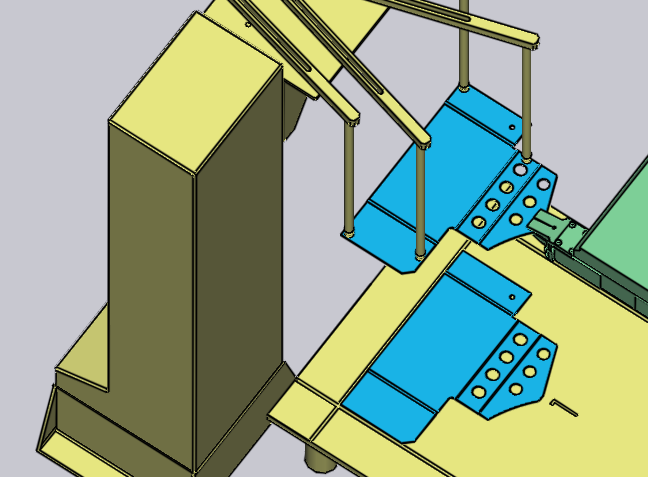
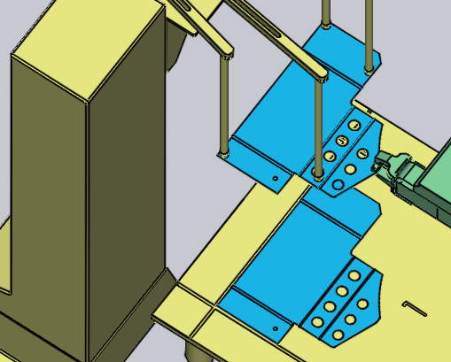

Pengambilan dari Dispenser
Komponen-komponen kecil ditangani menggunakan gripper mekanis, juga dikenal dalam TecZone Bend sebagai gripper jaw. Jika komponen lebih kecil dari ukuran A4, TecZone Bend akan secara otomatis beralih menggunakan gripper jaw. Gripper ini hanya dapat mengambil komponen dari stasiun pengeluaran (juga dikenal sebagai dispenser lembaran kosong). Parameter ini memengaruhi proses pengambilan ini:
-
Posisi dan orientasi dispenser dalam sel mesin.
-
Orientasi komponen pada dispenser.
-
Posisi dan orientasi gripper jaw pada komponen.
Panel-panel yang digunakan untuk mengedit semua pengaturan ini ditampilkan di bawah ini - semuanya terhubung melalui tautan navigasi atas/bawah yang mengarah ke panel lain dalam urutan logis:

Seperti yang ditunjukkan pada gambar di atas, panel-panel ini juga dapat diakses dengan mudah dengan hanya mengklik berbagai objek dalam simulasi:
-
Untuk membuka panel Dispenser, klik dispenser.
-
Untuk mengubah orientasi komponen pada dispenser, klik pada lembaran kosong yang terletak di dispenser (pastikan tahap saat ini berada pada Pengambilan terlebih dahulu, dengan mengklik kolom P di navigator).
-
Untuk mengedit posisi menahan Gripper pada komponen tersebut, klik gripper.
Panel Dispenser
Klik dispenser untuk membuka panel Dispenser. TecZone Bend meletakkan komponen di sudut penyesuaian dispenser, dan menempatkan lengan pencengkeram ekstraksi udara di sudut-sudut komponen. Anda dapat mengedit konfigurasi lengan, dan lokasi dispenser menggunakan panel ini.
-
Gunakan pengaturan Posisi, Sudut, dan Angkat untuk mengatur posisi dan orientasi dispenser, agar sesuai dengan posisi aktual di dalam sel.
Konfigurasi ekstraksi udara
Pengaturan dalam pengaturan Ekstraksi udara digunakan untuk mengonfigurasi lengan ekstraksi udara. Pengaturan ini hanya bersifat indikatif dan tidak krusial, karena tidak dikirimkan ke mesin melalui program NC. Operator pada mesin perlu mengatur lengan secara manual (mungkin dengan merujuk pada lembar pengaturan yang menyertai program NC).
-
Pilih Lengan dan edit pengaturan Sudut dan Panjang untuk memutar dan memperpanjang lengan sampai suction cup diposisikan pada komponen tersebut.
-
Gunakan pengaturan Jenis untuk mengganti suction cup yang dipasang pada dispenser.
| Karena konfigurasi sudut dan panjang lengan tidak termasuk dalam program NC yang dihasilkan oleh TecZone Bend, program tersebut sebenarnya tidak memeriksa apakah lengan-lengan tersebut saling bersilangan atau bertabrakan satu sama lain. |
Panel Pengambilan
Panel Pengambilan digunakan untuk mengatur orientasi komponen pada dispenser. Saat Anda memutar atau membalik komponen, TecZone Bend akan memilih bidang yang sesuai dengan tujuan penggunaan untuk menahan komponen (karena gripper hanya dapat masuk dari satu arah). Anda dapat menampilkan panel ini dengan mengklik lembaran kosong yang terletak di dispenser.

-
Tombol Manipulasi komponen ini digunakan untuk memutar komponen sebesar 90 derajat. Pada gambar di atas, komponen tidak pada orientasi ideal untuk referensi terhadap sudut dispenser. Berikut ini adalah hasil yang lebih baik, setelah beberapa kali aktivitas putar:
 -
Jika lembaran kosong pada dispenser terbalik, Anda dapat menggunakan tombol Balik komponen untuk membalik model agar sesuai:

Sejajarkan Semua Tepi
Terkadang, putaran 90° ini mungkin tidak cukup. Asumsikan Anda ingin menyejajarkan tepi target (ditunjukkan pada gambar di bawah) dengan referensi Z pada dispenser:

Klik Sejajarkan tepi dan pilih opsi Sejajarkan ke arah Z pada menu pop-up. Kemudian, klik pada komponen di dekat tepi target. Tepi itu sekarang menjadi sejajar dengan referensi dispenser. Hasilnya ditampilkan below[1], setelah beberapa penyesuaian pada posisi gripper dan orientasi agar lebih sesuai dengan penyesuaian baru ini):

Panel Gripper
Panel Gripper digunakan untuk memosisikan gripper pada komponen, beralih ke gripper yang berbeda, dan untuk mengonfigurasi sumbu putar dan geser gripper saat itu mengambil komponen.

-
Gunakan daftar Nama untuk memilih gripper baru dari daftar gripper jaw yang tersedia untuk mesin ini. Saat Anda menelusuri nama-nama dalam daftar, thumbnail dari gripper ditampilkan:

-
Gunakan pengaturan Posisi dan Sudut untuk memosisikan dan mengorientasikan gripper relatif terhadap titik tengah bidang cengkeram. Pusat ini ditandai oleh dua lingkaran ganda pada gambar di atas. Ini adalah gripper yang sama dari atas, setelah kami menyesuaikan posisi dan sudutnya:

-
Tombol Balik jaw dan Geser digunakan untuk mengubah konfigurasi leher dan geser gripper. Berikut hasilnya mulai dari konfigurasi pertama di atas, dan menerapkan aktivitas ini:

-
Tombol Gunakan gripper vakum mengalihkan komponen ke penggunaan vacuum gripper. Ini pada dasarnya merupakan perhitungan ulang lengkap dari komponen. Dispenser tidak lagi digunakan, dan komponen tersebut diambil dari palet. Urutan tekukan, aktivitas pencengkeraman ulang, dan pola endapan semuanya dihitung ulang agar lebih sesuai untuk vacuum gripper.
Mengubah Bidang Cengkeram
Perintah Pilih permukaan untuk mencengkeram ini digunakan untuk mencengkeram komponen dengan bidang yang berbeda. Klik tombol ini, lalu pindahkan bidang yang ingin Anda pindahkan gripper-nya. Saat Anda melakukan ini, sebuah tanda silang akan digambar pada bidang tersebut untuk menandakan bahwa bidang tersebut telah dipilih:

Mengklik pada bidang tersebut akan memindahkan gripper ke bidang tersebut, seperti yang ditunjukkan pada gambar di bawah ini. Biasanya perubahan seperti itu di Bidang Cengkeram juga akan membutuhkan beberapa pergantian di urutan tekukan, perubahan pada aktivitas pencengkeraman ulang, dll.